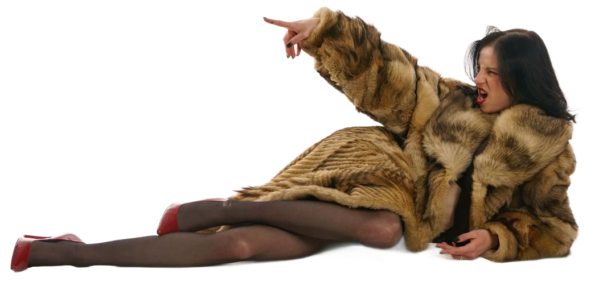
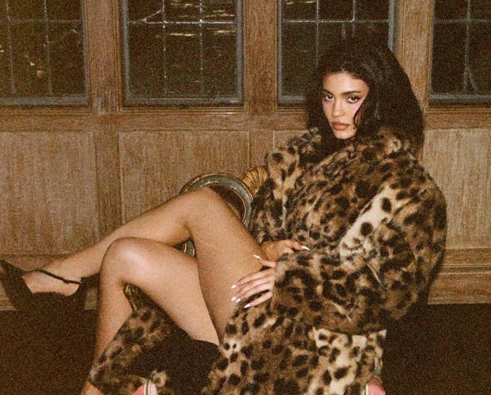
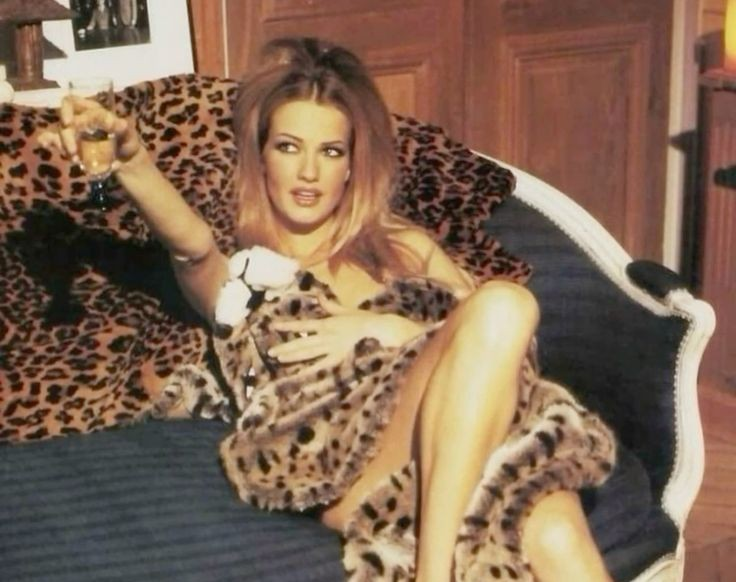

The Return Of Leopard Fur
Wild, bold, chic Leopard fur style is back and it’s hotter than ever! Bringing a fearless fashion trend to the Canadian fashion industry.
Explore below how fashion's wildest print can transform even the simplest outfit into a statement of personal style......

The Challenge: Leopard Fur
Leopard prints has been ongoing trend ever since the 1920s, making fashion possible with it’s chic, unique and classy look. Leopard has been paused after 2015 during the era in which other trends has risen up. Trends such as Button-Front skirts, or casual blouses inspired by Tumblr community. The return of leopard fur/pattern rise up again after 2021, especially after models such as Kylie Jenner, Hailey Bieber, and Elle Fanning brought them back to life.


Key Outcomes: The Trend is awake again
The return of leopard fur rise up again after 2021, especially after models such as Kylie Jenner, Hailey Bieber, and Elle Fanning brought them back to life. Which was a great come back to the fashion industry as many teenagers or young adults who did not experience them can now get how chic and elegant it is to wear that pattern!